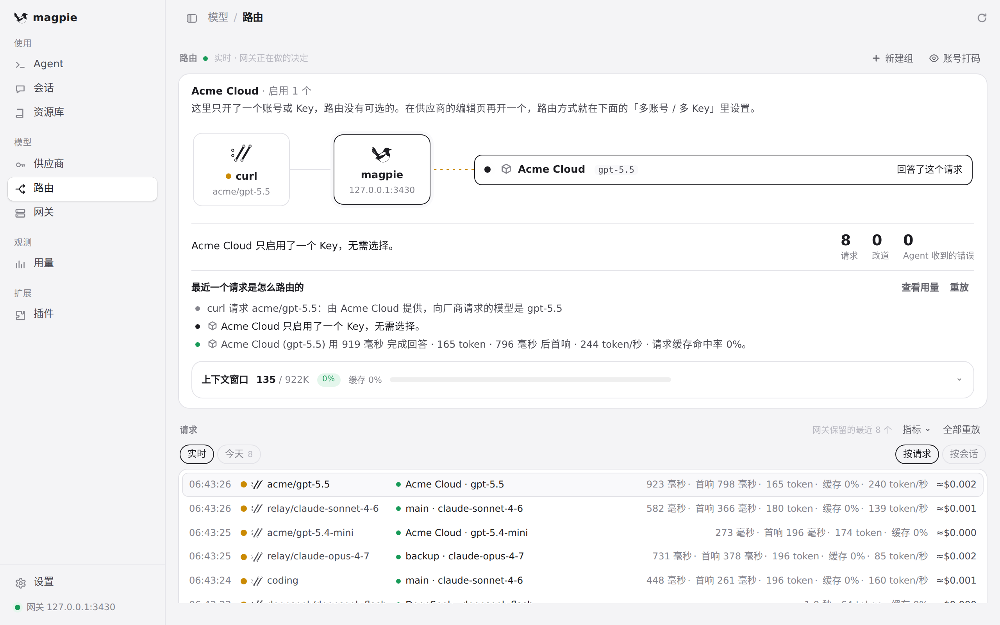
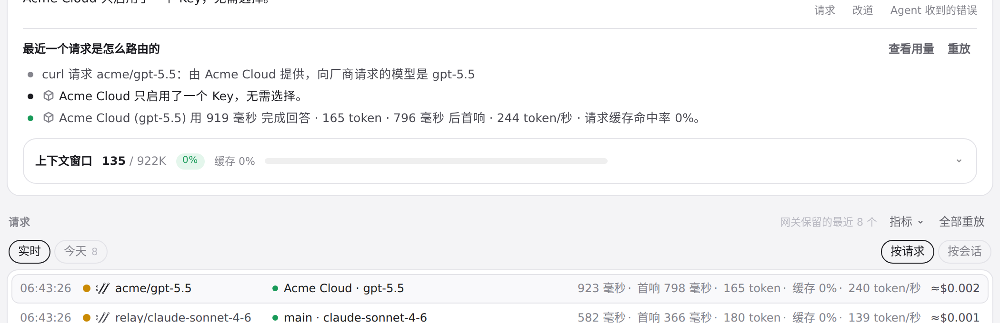
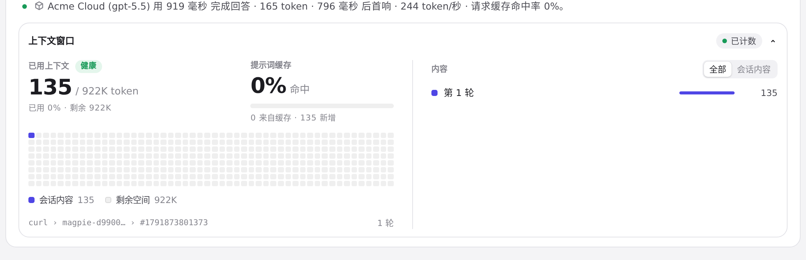

#1354 界面预览
commit 735c08e · 回到 PR · 路由页的上下文窗口改成一条可点击的标题行，放在舞台与请求故事的下方：收起时只显示已用/窗口 token、占比、缓存与占用条，点开才构建详情网格和内容列表，不再有第二个标题；卡片宽到 800px 及以上时详情内的概览与内容并排成两栏。
红线是鼠标走过的轨迹，红色圆环是一次点击；底部文字是这一步在做什么。空格暂停，← → 逐段查看。

路由页的上下文窗口头 · 路由页打开时的样子

路由页的上下文窗口头 · 页面下方收起的上下文窗口头：用量、占比与占用条

路由页的上下文窗口头 · 点击之后的上下文窗口
路由页的上下文窗口头 · 再次点击之后的上下文窗口